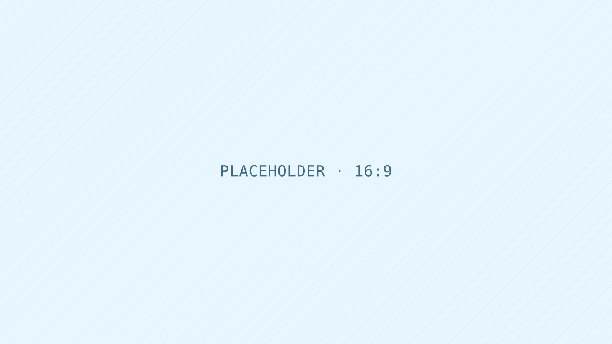

Case study 02 Unconfirmed [Academic / professional / personal]
[Project title: which project goes here is not decided]
[The question we were trying to answer, in one sentence]

At a glance
Context
[Who had the problem, and why it mattered. Two sentences.]
My contribution
[What I personally did, separate from what the team did.]
Outcome
[What changed, or what we learned if it didn't ship. Plain and honest.]
The problem[One sentence that names the real problem]
[How the problem first looked, and what made us see it differently. Show the reader the problem before any solution.]
[What I did to understand it: who I talked to, what I watched or read.]
What we knew
- [Finding 1][Source: e.g. interviews, observation, data review]
- [Finding 2][Source]
- [Finding 3][Source]
What limited us
- [Constraint 1: time, technology, policy, people…]
- [Constraint 2]
- [What we didn't know and couldn't find out in time]
Decisions[The two or three calls that shaped the work]
[The decision, stated as a choice]
[Why this decision came up, and who was part of it.]
What we gave up: [The cost of this choice]
[The decision, stated as a choice]
[Why it came up.]
What we gave up: [The cost]
[Delete this block if there are only two]
Iterations[What changed between versions, and why]
Round 1
[What we believed going in: "We thought people would…"]
Prototype

Feedback
[Who, and how: e.g. a usability session with N people][What we heard or saw. Only real, permitted quotes; otherwise paraphrase.]
Revision
Round 2
[The next belief we tested]
Prototype
Feedback
[Who, and how][What we heard or saw]
Revision
Outcome and limits[Where it ended up, in one honest sentence]
[Status: e.g. shipped, piloted, prototype only, or not built]
What changed
[Results I can stand behind. No numbers until confirmed and shareable.]
What we don't know
[Limits of the evidence, what wasn't tested, what I'd question.]
What I'd do next
[The next question, and what I'd do differently.]